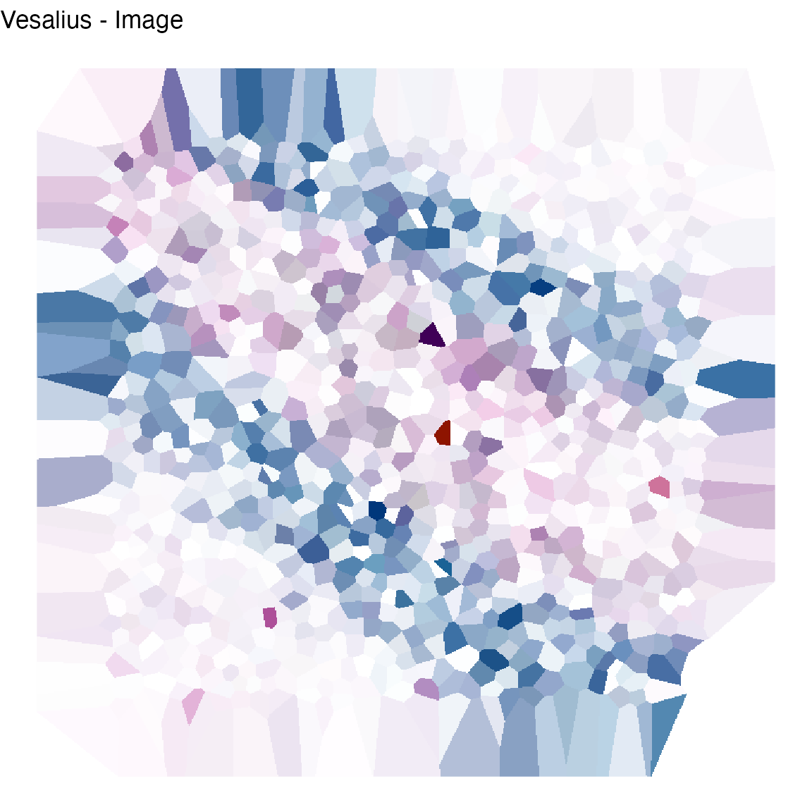
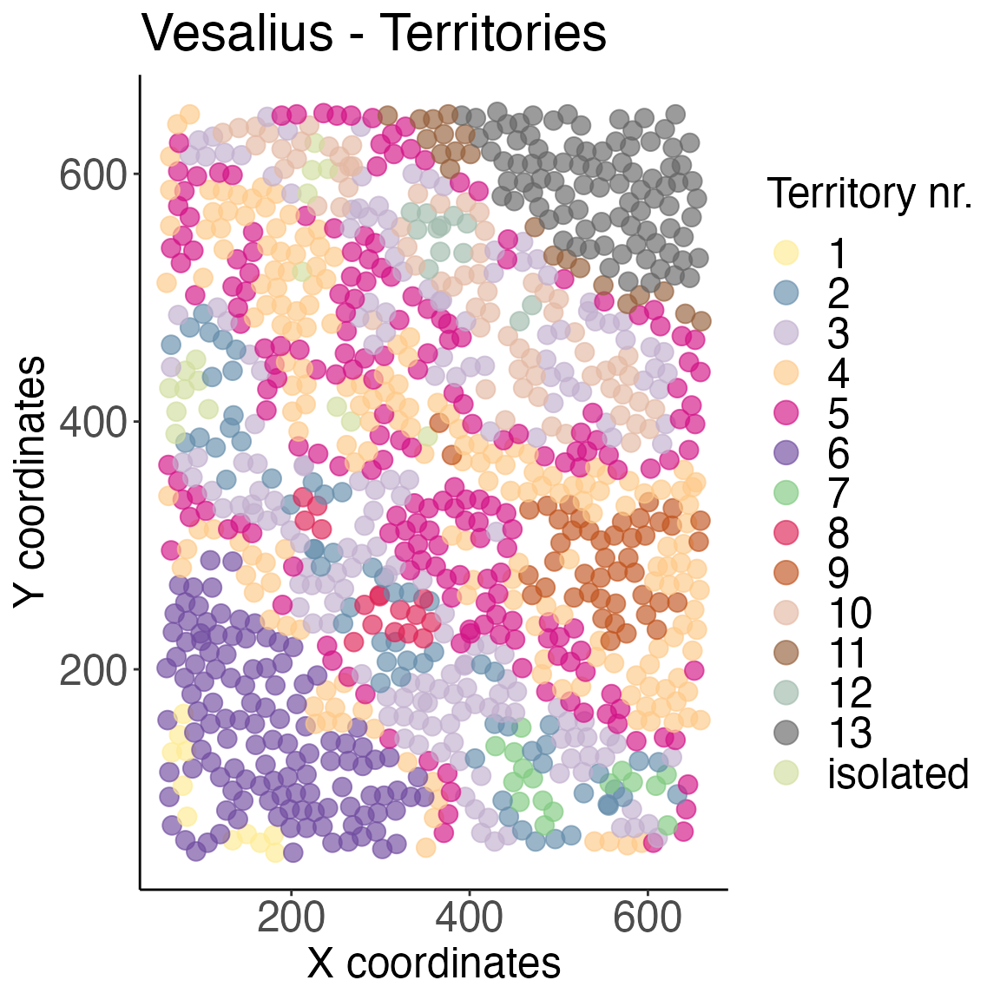

Do you like to live in the fast lane? Do you sigh every time you see a long vignette? Do you wish there was a TLDR on everything?
I understand.
Welcome to the Vesalius quick start!
In this vignette, you will find a very short guide on how to work with Vesalius. Vesalius provides an internal data set taken from real Spatial transcrtiptomic data. For an in depth view of Vesalius, please refer to Vesalius_Analysis.Rmd.
For all intents and purposes, this is a dummy data set and should only be used to get a feel for the Vesalius package. We strongly advise you to use real and complete data sets to fully understand the Vesalius package and its benefits.
Vesalius is a tool to perform high-resolution in silico anatomization and molecular characterization from ST data without requiring companion images.
This is achieved by converting ST data into images: PCA loading values are embedded into RGB colour channels by taking the sum of the absolute value of all loading values associated to each bead on the ST array.
Image analysis techniques are applied to the image and anatomical territories can subsequently be extracted.
First, let’s load the package and the data. Data originates from slide-seqV2 data (availble at (Single Cell Portal)[https://singlecell.broadinstitute.org/single_cell/study/SCP948/robust-decomposition-of-cell-type-mixtures-in-spatial-transcriptomics#study-download]).
For sake of simplicity, Vesalius takes a small subset of this data set and stores it in the form of a Seurat object.
## Warning: replacing previous import 'imager::fill' by 'tidyr::fill' when loading
## 'vesalius'
data(vesalius,package = "vesalius")
# First create a copy of raw data for later use
# For sake of simplicity we seperate counts from Vesalius images.
counts <- vesaliusSecond, we pre-process the data using Seurat
# Preprocessing Spatial transcriptomic data with Seurat
vesalius <- NormalizeData(vesalius,verbose =F)
vesalius <- FindVariableFeatures(vesalius, nfeatures = 2000,verbose =F)
vesalius <- ScaleData(vesalius,verbose =F)Third, we convert a count matrix (stored in a Seurat object) to RGB coded coordinates. We will only produce one slice (i.e. PC1 to PC3). Alternatively, you can also choose to embed UMAP projections. In this case, there are no slices but only a number of Principal Components used for UMAP.
# PCA
vesaliusPCA <- rgbPCA(vesalius,slices = 1,verbose =F)
# UMAP
vesaliusUMAP <- rgbUMAP(vesalius,pcs = 30,verbose =F)## Warning: The default method for RunUMAP has changed from calling Python UMAP via reticulate to the R-native UWOT using the cosine metric
## To use Python UMAP via reticulate, set umap.method to 'umap-learn' and metric to 'correlation'
## This message will be shown once per sessionForth, we create an actual image by using a combination of Voronoi diagrams and tile rasterisation.
vesalius <- buildImageArray(vesaliusPCA, sliceID = 1, invert =T,verbose =F)
# Let's have a look shall we?
Vesalius_image <- imagePlot(vesalius,as.cimg =FALSE) + theme_void()
print(Vesalius_image)
Firth, we can apply image analysis techniques such as histogram equalisation, variance regularisation, smoothing and segmentation.
# Histogram EQ
vesalius <- equalizeHistogram(vesalius,sleft = 2.5, sright=2.5,invert =T,verbose =F)## 2021-10-28 15:50:09 Inverting Colours## Warning in as.cimg.data.frame(.): Guessing image dimensions from maximum
## coordinate values
## Warning in as.cimg.data.frame(.): Guessing image dimensions from maximum
## coordinate values
# Variance regularisation
vesalius <- regulariseImage(vesalius, lambda = 10,
niter = 200, normalise=T,verbose =F)## Warning in as.cimg.data.frame(.): Guessing image dimensions from maximum
## coordinate values
# Smoothing
# !!!Optional!!! -
vesalius <- smoothArray(vesalius,method = "box", box = 1,verbose =F)## Warning in as.cimg.data.frame(select(image, c("x", "y", "cc", "value"))):
## Guessing image dimensions from maximum coordinate values
# Segmentation
# This function provides smoothing internally.
vesalius <- iterativeSegmentation.array(vesalius,
colDepth = 6,
smoothIter = 20,
method = c("iso","median"),
sigma=1.5,
box = 10,
useCenter = T,
invert =T,
verbose =F)## Warning in as.cimg.data.frame(select(image, c("x", "y", "cc", "value"))):
## Guessing image dimensions from maximum coordinate values
## Warning in as.cimg.data.frame(select(image, c("x", "y", "cc", "value"))):
## Guessing image dimensions from maximum coordinate values## Warning in as.cimg.data.frame(imgCopy): Guessing image dimensions from maximum
## coordinate values
# Isolating territories from colour segments
vesalius <- isolateTerritories.array(vesalius,
captureRadius = 0.1,
minBar = 10,
verbose =F)Sixth, we can visualise the territories.
# Let's have a look!
imgTerritory <- territoryPlot(vesalius, randomise = TRUE,cex =15 , cex.pt=3.5)
print(imgTerritory)
Finally, we can extract territories to run a more in depth analysis. This returns a Seurat object with all selected territories. We can also find differential gene expression between territories.
# extract terriotry from seurat object
ter <- extractTerritories(vesalius,counts,seedID= 1,verbose =F)## Warning in as.cimg.data.frame(.): Guessing image dimensions from maximum
## coordinate values
# get all markers related to all territories
all <- extractAllMarkers(vesalius,counts,verbose =F)
# get markers associated with on or more territories
one <- extractMarkers(vesalius, counts, seed = c(1),verbose =F)
# comparing territories
two <- extractMarkers(vesalius, counts, seed = c(1), query = c(2,3),verbose =F)